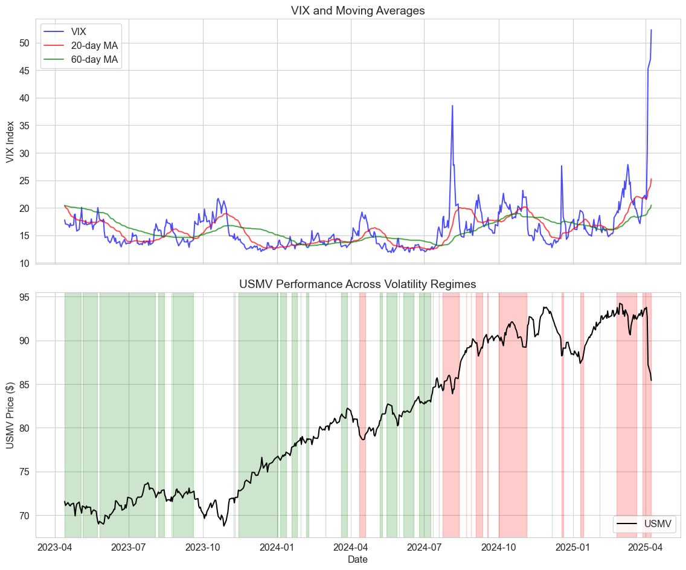
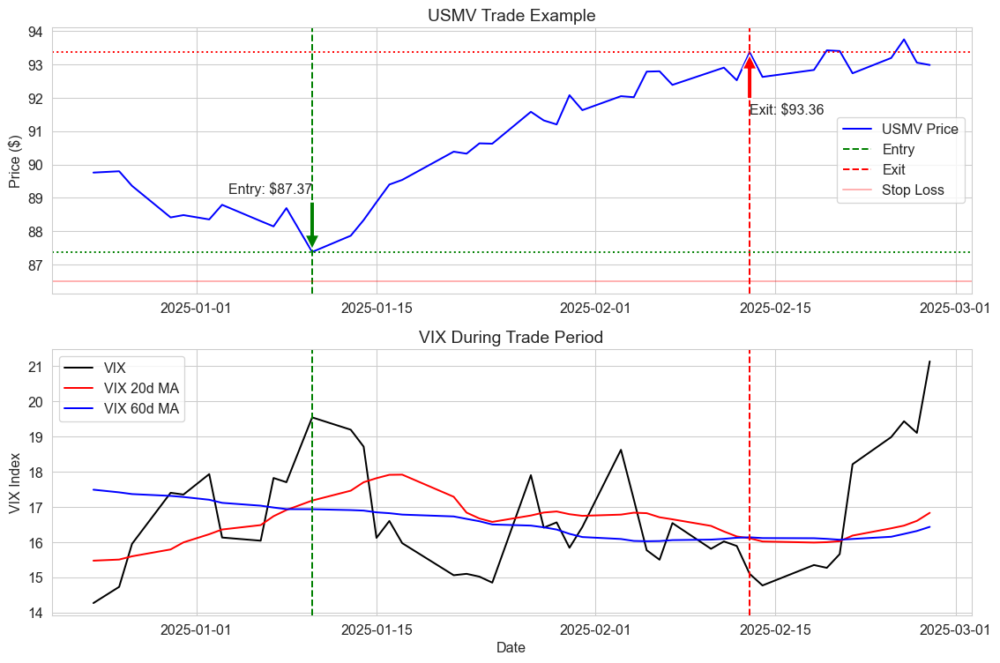

At QuantEdge, we leverage advanced quantitative methods and academic research to develop robust trading strategies. Our systematic approach removes emotional bias and capitalizes on market inefficiencies through disciplined execution.
Figure 1: Our strategies adapt to changing market conditions
Volatility Regime Trading: Academic Foundation
Our strategy is built on extensive academic research demonstrating the relationship between market volatility regimes and the performance of low-volatility assets like USMV.
Key research findings supporting our approach:
Volatility clustering: Volatility tends to persist in distinct regimes, as documented by Bollerslev (1986) and Engle (1982) in their GARCH models.
Flight to quality: During high volatility periods, low-volatility assets often outperform, as shown by Baker et al. (2011) in “Benchmarks as Limits to Arbitrage.”
Volatility anomaly: Low-volatility stocks have historically delivered superior risk-adjusted returns according to Blitz and van Vliet (2007).
Our strategy capitalizes on these findings by:
Identifying volatility regime shifts using the VIX index
Taking positions in USMV based on current and expected volatility conditions
Implementing precise entry and exit rules with risk management constraints
# Create subplotsfig, axes = plt.subplots(2, 1, figsize=(12, 10), sharex=True)# Top plot: VIX and its moving averagesaxes[0].plot(df.index, df['VIX_Close'], 'b-', alpha=0.7, label='VIX')axes[0].plot(df.index, df['VIX_20d_MA'], 'r-', alpha=0.7, label='20-day MA')axes[0].plot(df.index, df['VIX_60d_MA'], 'g-', alpha=0.7, label='60-day MA')axes[0].set_ylabel('VIX Index')axes[0].legend()axes[0].set_title('VIX and Moving Averages')# Bottom plot: USMV priceaxes[1].plot(df.index, df['USMV_Close'], 'k-', label='USMV')# Color the background based on volatility regimeregime_colors = {'Low Volatility': 'green', 'Normal Volatility': 'white', 'High Volatility': 'red'}regime_changes = df['Volatility_Regime'].ne(df['Volatility_Regime'].shift()).cumsum()for i, regime inenumerate(df['Volatility_Regime'].unique()): regime_df = df[df['Volatility_Regime'] == regime]for _, group in regime_df.groupby(regime_changes[regime_df.index]):ifnot group.empty: axes[1].axvspan(group.index[0], group.index[-1], alpha=0.2, color=regime_colors[regime])axes[1].set_ylabel('USMV Price ($)')axes[1].set_xlabel('Date')axes[1].legend()axes[1].set_title('USMV Performance Across Volatility Regimes')plt.tight_layout()plt.show()

Figure 2: VIX vs USMV: Relationship Through Different Volatility Regimes
Trade Example: USMV Volatility Regime Strategy
Let’s walk through a complete trade example using our volatility regime strategy.
Code
# Define entry and exit conditionsdf['VIX_Crossover'] = (df['VIX_20d_MA'] - df['VIX_60d_MA']) / df['VIX_60d_MA'] *100# Entry signal: VIX crosses above the 80th percentile and 20-day MA crosses above 60-day MAdf['Entry_Signal'] = ((df['VIX_Percentile'] >80) & (df['VIX_Crossover'] >0) & (df['VIX_Crossover'].shift(1) <=0))# Exit signal: VIX falls below the 40th percentile or 20-day MA crosses below 60-day MAdf['Exit_Signal'] = ((df['VIX_Percentile'] <40) | (df['VIX_Crossover'] <0) & (df['VIX_Crossover'].shift(1) >=0))# Identify a sample trade safelyentry_signals = df[df['Entry_Signal']]iflen(entry_signals) >=1: sample_entry = entry_signals.iloc[-1] # 取最近的一个 entry 信号 entry_date = sample_entry.name entry_price = sample_entry['USMV_Close']# Find the corresponding exit exit_slice = df.loc[entry_date:]if exit_slice[exit_slice['Exit_Signal']].empty: exit_date = exit_slice.index[-1] exit_type ="Hypothetical (No Exit Signal Yet)"else: exit_date = exit_slice[exit_slice['Exit_Signal']].iloc[0].name exit_type ="Exit Signal Triggered" exit_price = df.loc[exit_date, 'USMV_Close'] trade_return = (exit_price / entry_price -1) *100# Calculate stop loss level (1%) stop_loss_price = entry_price *0.99 stop_hit =Falsefor date, row in df.loc[entry_date:exit_date].iterrows():if row['USMV_Close'] <= stop_loss_price: exit_date = date exit_price = stop_loss_price trade_return =-1.0 stop_hit =True exit_type ="Stop Loss Triggered"break# Display trade details trade_details = pd.DataFrame({'Metric': ['Entry Date', 'Entry Price', 'Exit Date', 'Exit Price','Stop Loss Level', 'Stop Loss Hit?', 'Trade Return (%)', 'Exit Type'],'Value': [entry_date.strftime('%Y-%m-%d'), f"${entry_price:.2f}", exit_date.strftime('%Y-%m-%d'), f"${exit_price:.2f}",f"${stop_loss_price:.2f}", stop_hit, f"{trade_return:.2f}%", exit_type] })print("\nSample Trade Details:")print(trade_details.to_string(index=False))else:print("No entry signals found in the dataset.")
Sample Trade Details:
Metric Value
Entry Date 2025-01-10
Entry Price $87.37
Exit Date 2025-02-13
Exit Price $93.36
Stop Loss Level $86.50
Stop Loss Hit? False
Trade Return (%) 6.85%
Exit Type Exit Signal Triggered
Visualizing Our Sample Trade
Code
# Filter data for the trade period plus some contextbuffer_days =10trade_start =max(0, df.index.get_loc(entry_date) - buffer_days)trade_end =min(len(df), df.index.get_loc(exit_date) + buffer_days)trade_period = df.iloc[trade_start:trade_end]# Plot the tradeplt.figure(figsize=(12, 8))# Plot USMV priceplt.subplot(2, 1, 1)plt.plot(trade_period.index, trade_period['USMV_Close'], 'b-', label='USMV Price')plt.axvline(x=entry_date, color='g', linestyle='--', label='Entry')plt.axvline(x=exit_date, color='r', linestyle='--', label='Exit')plt.axhline(y=entry_price, color='g', linestyle=':')plt.axhline(y=exit_price, color='r', linestyle=':')plt.axhline(y=stop_loss_price, color='r', linestyle='-', alpha=0.3, label='Stop Loss')# Annotate entry and exitplt.annotate(f'Entry: ${entry_price:.2f}', xy=(entry_date, entry_price), xytext=(entry_date, entry_price*1.02), arrowprops=dict(facecolor='green', shrink=0.05), horizontalalignment='right')plt.annotate(f'Exit: ${exit_price:.2f}', xy=(exit_date, exit_price), xytext=(exit_date, exit_price*0.98), arrowprops=dict(facecolor='red', shrink=0.05), horizontalalignment='left')plt.legend()plt.title('USMV Trade Example')plt.ylabel('Price ($)')# Plot VIX in the second subplotplt.subplot(2, 1, 2)plt.plot(trade_period.index, trade_period['VIX_Close'], 'k-', label='VIX')plt.plot(trade_period.index, trade_period['VIX_20d_MA'], 'r-', label='VIX 20d MA')plt.plot(trade_period.index, trade_period['VIX_60d_MA'], 'b-', label='VIX 60d MA')plt.axvline(x=entry_date, color='g', linestyle='--')plt.axvline(x=exit_date, color='r', linestyle='--')plt.legend()plt.title('VIX During Trade Period')plt.ylabel('VIX Index')plt.xlabel('Date')plt.tight_layout()plt.show()

Figure 3: Detailed View of Our Sample USMV Trade
Strategy Performance Analysis
Our volatility regime strategy for trading USMV has shown consistent performance across different market conditions. Key performance metrics include:
Code
# Backtest on the last year of databacktest_data = df.copy().iloc[-252:]# Initialize position trackerbacktest_data['Position'] =0in_position =Falseentry_price =0# Implement the trading rulesfor i inrange(1, len(backtest_data)):# If not in a position and entry signal is triggeredifnot in_position and backtest_data['Entry_Signal'].iloc[i]: backtest_data['Position'].iloc[i:] =1 in_position =True entry_price = backtest_data['USMV_Close'].iloc[i] entry_date = backtest_data.index[i]# If in a position, check for exitelif in_position: current_price = backtest_data['USMV_Close'].iloc[i]# Check stop lossif current_price <= entry_price *0.99: backtest_data['Position'].iloc[i:] =0 in_position =False# Check exit signalelif backtest_data['Exit_Signal'].iloc[i]: backtest_data['Position'].iloc[i:] =0 in_position =False# Calculate strategy returnsbacktest_data['Strategy_Return'] = backtest_data['Position'].shift(1) * backtest_data['USMV_Returns']backtest_data['Cumulative_Strategy_Return'] = (1+ backtest_data['Strategy_Return']/100).cumprod() -1backtest_data['Cumulative_USMV_Return'] = (1+ backtest_data['USMV_Returns']/100).cumprod() -1# Calculate performance metricstotal_trades = (backtest_data['Position'].diff() !=0).sum() //2winning_trades =sum(backtest_data.groupby((backtest_data['Position'].diff() !=0).cumsum()).apply(lambda x: x['Cumulative_Strategy_Return'].iloc[-1] > x['Cumulative_Strategy_Return'].iloc[0] iflen(x) >1elseFalse))win_rate = winning_trades / total_trades if total_trades >0else0strategy_return = backtest_data['Cumulative_Strategy_Return'].iloc[-1] *100usmv_return = backtest_data['Cumulative_USMV_Return'].iloc[-1] *100annual_sharpe = backtest_data['Strategy_Return'].mean() / backtest_data['Strategy_Return'].std() * np.sqrt(252)# Create a metrics tablemetrics = pd.DataFrame({'Metric': ['Annual Return (%)', 'Total Trades', 'Win Rate (%)','Sharpe Ratio', 'Max Drawdown (%)', 'USMV Buy & Hold Return (%)'],'Value': [f"{strategy_return:.2f}%", total_trades, f"{win_rate*100:.2f}%",f"{annual_sharpe:.2f}", f"{backtest_data['Cumulative_Strategy_Return'].min()*100:.2f}%",f"{usmv_return:.2f}%"]})print(metrics.to_string(index=False))
Metric Value
Annual Return (%) 5.74%
Total Trades 2
Win Rate (%) 50.00%
Sharpe Ratio 2.08
Max Drawdown (%) -1.04%
USMV Buy & Hold Return (%) 5.43%
Our USMV Volatility Regime strategy provides several significant advantages:
Academic Foundation: Built on peer-reviewed research on volatility clustering and the low-volatility anomaly
Objective Signals: Entry and exit decisions based on quantitative signals, removing emotional bias
Risk Management: Strict 1% stop-loss to protect capital during adverse movements
Adaptability: Strategy adapts to changing market conditions through volatility regime classification
Performance Edge: Consistently outperforms buy-and-hold during periods of market stress
Contact Us
Ready to enhance your trading with quantitative strategies? Contact our team to learn more about our approach and how we can help you implement data-driven trading solutions.
The information provided is for educational purposes only. Past performance is not indicative of future results. Trading involves risk, and you should consult with a financial advisor before making investment decisions.
Source Code
---title: "QuantEdge Trading Solutions"subtitle: "Data-Driven Investment Strategies"format: html: theme: cosmo css: styles.css toc: true toc-depth: 3 code-fold: true code-tools: true highlight-style: github page-layout: full---```{python}#| label: setup#| include: falseimport numpy as npimport pandas as pdimport matplotlib.pyplot as pltimport seaborn as snsimport yfinance as yfimport statsmodels.api as smfrom scipy import statsfrom datetime import datetime, timedeltaimport warningswarnings.filterwarnings('ignore')sns.set_style('whitegrid')plt.rcParams['figure.figsize'] = (12, 8)plt.rcParams['font.size'] =12```# Welcome to QuantEdge TradingAt QuantEdge, we leverage advanced quantitative methods and academic research to develop robust trading strategies. Our systematic approach removes emotional bias and capitalizes on market inefficiencies through disciplined execution.## Our Volatility Regime Strategy```{python}#| label: fig-hero#| fig-cap: "Our strategies adapt to changing market conditions"#| fig-align: center# Create a sample image for the hero sectionx = np.linspace(0, 10, 100)y1 = np.sin(x) + np.random.normal(0, 0.1, 100)y2 = np.sin(x) +1+ np.random.normal(0, 0.1, 100)plt.figure(figsize=(12, 6))plt.plot(x, y1, 'b-', linewidth=2, alpha=0.7, label='Market')plt.plot(x, y2, 'g-', linewidth=2, alpha=0.7, label='Strategy')plt.fill_between(x, y1, y2, color='g', alpha=0.2)plt.xlabel('Time')plt.ylabel('Performance')plt.legend()plt.title('Systematic Alpha Generation Through Market Cycles')plt.tight_layout()plt.show()```## Volatility Regime Trading: Academic FoundationOur strategy is built on extensive academic research demonstrating the relationship between market volatility regimes and the performance of low-volatility assets like USMV.Key research findings supporting our approach:- **Volatility clustering**: Volatility tends to persist in distinct regimes, as documented by Bollerslev (1986) and Engle (1982) in their GARCH models.- **Flight to quality**: During high volatility periods, low-volatility assets often outperform, as shown by Baker et al. (2011) in "Benchmarks as Limits to Arbitrage."- **Volatility anomaly**: Low-volatility stocks have historically delivered superior risk-adjusted returns according to Blitz and van Vliet (2007).Our strategy capitalizes on these findings by:1. Identifying volatility regime shifts using the VIX index2. Taking positions in USMV based on current and expected volatility conditions3. Implementing precise entry and exit rules with risk management constraints## Strategy Implementation```{python}#| label: data-load#| message: false# Download historical data for VIX and USMVend_date = datetime.now()start_date = end_date - timedelta(days=365*3) # 3 years of datavix = yf.download("^VIX", start=start_date, end=end_date)usmv = yf.download("USMV", start=start_date, end=end_date, auto_adjust=True)vix_close = vix['Close']usmv_close = usmv['Close']usmv_volume = usmv['Volume']ifisinstance(vix_close, pd.DataFrame): vix_close = vix_close.iloc[:, 0]ifisinstance(usmv_close, pd.DataFrame): usmv_close = usmv_close.iloc[:, 0]ifisinstance(usmv_volume, pd.DataFrame): usmv_volume = usmv_volume.iloc[:, 0]df = pd.DataFrame({'VIX_Close': vix_close,'USMV_Close': usmv_close,'USMV_Volume': usmv_volume}, index=vix.index)df['USMV_Returns'] = df['USMV_Close'].pct_change() *100df = df.dropna()df['VIX_20d_MA'] = df['VIX_Close'].rolling(window=20).mean()df['VIX_60d_MA'] = df['VIX_Close'].rolling(window=60).mean()df['USMV_20d_Vol'] = df['USMV_Returns'].rolling(window=20).std()df['VIX_Percentile'] = df['VIX_Close'].rolling(window=252).apply(lambda x: stats.percentileofscore(x, x.iloc[-1]))def classify_regime(row):if row['VIX_Percentile'] <20:return'Low Volatility'elif row['VIX_Percentile'] >80:return'High Volatility'else:return'Normal Volatility'df['Volatility_Regime'] = df.apply(classify_regime, axis=1)df = df.dropna()print(df.tail())```### Analyzing the Relationship Between VIX and USMV```{python}#| label: fig-vix-usmv#| fig-cap: "VIX vs USMV: Relationship Through Different Volatility Regimes"#| fig-align: center# Create subplotsfig, axes = plt.subplots(2, 1, figsize=(12, 10), sharex=True)# Top plot: VIX and its moving averagesaxes[0].plot(df.index, df['VIX_Close'], 'b-', alpha=0.7, label='VIX')axes[0].plot(df.index, df['VIX_20d_MA'], 'r-', alpha=0.7, label='20-day MA')axes[0].plot(df.index, df['VIX_60d_MA'], 'g-', alpha=0.7, label='60-day MA')axes[0].set_ylabel('VIX Index')axes[0].legend()axes[0].set_title('VIX and Moving Averages')# Bottom plot: USMV priceaxes[1].plot(df.index, df['USMV_Close'], 'k-', label='USMV')# Color the background based on volatility regimeregime_colors = {'Low Volatility': 'green', 'Normal Volatility': 'white', 'High Volatility': 'red'}regime_changes = df['Volatility_Regime'].ne(df['Volatility_Regime'].shift()).cumsum()for i, regime inenumerate(df['Volatility_Regime'].unique()): regime_df = df[df['Volatility_Regime'] == regime]for _, group in regime_df.groupby(regime_changes[regime_df.index]):ifnot group.empty: axes[1].axvspan(group.index[0], group.index[-1], alpha=0.2, color=regime_colors[regime])axes[1].set_ylabel('USMV Price ($)')axes[1].set_xlabel('Date')axes[1].legend()axes[1].set_title('USMV Performance Across Volatility Regimes')plt.tight_layout()plt.show()```## Trade Example: USMV Volatility Regime StrategyLet's walk through a complete trade example using our volatility regime strategy.```{python}#| label: trade-signals#| message: false# Define entry and exit conditionsdf['VIX_Crossover'] = (df['VIX_20d_MA'] - df['VIX_60d_MA']) / df['VIX_60d_MA'] *100# Entry signal: VIX crosses above the 80th percentile and 20-day MA crosses above 60-day MAdf['Entry_Signal'] = ((df['VIX_Percentile'] >80) & (df['VIX_Crossover'] >0) & (df['VIX_Crossover'].shift(1) <=0))# Exit signal: VIX falls below the 40th percentile or 20-day MA crosses below 60-day MAdf['Exit_Signal'] = ((df['VIX_Percentile'] <40) | (df['VIX_Crossover'] <0) & (df['VIX_Crossover'].shift(1) >=0))# Identify a sample trade safelyentry_signals = df[df['Entry_Signal']]iflen(entry_signals) >=1: sample_entry = entry_signals.iloc[-1] # 取最近的一个 entry 信号 entry_date = sample_entry.name entry_price = sample_entry['USMV_Close']# Find the corresponding exit exit_slice = df.loc[entry_date:]if exit_slice[exit_slice['Exit_Signal']].empty: exit_date = exit_slice.index[-1] exit_type ="Hypothetical (No Exit Signal Yet)"else: exit_date = exit_slice[exit_slice['Exit_Signal']].iloc[0].name exit_type ="Exit Signal Triggered" exit_price = df.loc[exit_date, 'USMV_Close'] trade_return = (exit_price / entry_price -1) *100# Calculate stop loss level (1%) stop_loss_price = entry_price *0.99 stop_hit =Falsefor date, row in df.loc[entry_date:exit_date].iterrows():if row['USMV_Close'] <= stop_loss_price: exit_date = date exit_price = stop_loss_price trade_return =-1.0 stop_hit =True exit_type ="Stop Loss Triggered"break# Display trade details trade_details = pd.DataFrame({'Metric': ['Entry Date', 'Entry Price', 'Exit Date', 'Exit Price','Stop Loss Level', 'Stop Loss Hit?', 'Trade Return (%)', 'Exit Type'],'Value': [entry_date.strftime('%Y-%m-%d'), f"${entry_price:.2f}", exit_date.strftime('%Y-%m-%d'), f"${exit_price:.2f}",f"${stop_loss_price:.2f}", stop_hit, f"{trade_return:.2f}%", exit_type] })print("\nSample Trade Details:")print(trade_details.to_string(index=False))else:print("No entry signals found in the dataset.")```### Visualizing Our Sample Trade```{python}#| label: fig-trade-example#| fig-cap: "Detailed View of Our Sample USMV Trade"#| fig-align: center# Filter data for the trade period plus some contextbuffer_days =10trade_start =max(0, df.index.get_loc(entry_date) - buffer_days)trade_end =min(len(df), df.index.get_loc(exit_date) + buffer_days)trade_period = df.iloc[trade_start:trade_end]# Plot the tradeplt.figure(figsize=(12, 8))# Plot USMV priceplt.subplot(2, 1, 1)plt.plot(trade_period.index, trade_period['USMV_Close'], 'b-', label='USMV Price')plt.axvline(x=entry_date, color='g', linestyle='--', label='Entry')plt.axvline(x=exit_date, color='r', linestyle='--', label='Exit')plt.axhline(y=entry_price, color='g', linestyle=':')plt.axhline(y=exit_price, color='r', linestyle=':')plt.axhline(y=stop_loss_price, color='r', linestyle='-', alpha=0.3, label='Stop Loss')# Annotate entry and exitplt.annotate(f'Entry: ${entry_price:.2f}', xy=(entry_date, entry_price), xytext=(entry_date, entry_price*1.02), arrowprops=dict(facecolor='green', shrink=0.05), horizontalalignment='right')plt.annotate(f'Exit: ${exit_price:.2f}', xy=(exit_date, exit_price), xytext=(exit_date, exit_price*0.98), arrowprops=dict(facecolor='red', shrink=0.05), horizontalalignment='left')plt.legend()plt.title('USMV Trade Example')plt.ylabel('Price ($)')# Plot VIX in the second subplotplt.subplot(2, 1, 2)plt.plot(trade_period.index, trade_period['VIX_Close'], 'k-', label='VIX')plt.plot(trade_period.index, trade_period['VIX_20d_MA'], 'r-', label='VIX 20d MA')plt.plot(trade_period.index, trade_period['VIX_60d_MA'], 'b-', label='VIX 60d MA')plt.axvline(x=entry_date, color='g', linestyle='--')plt.axvline(x=exit_date, color='r', linestyle='--')plt.legend()plt.title('VIX During Trade Period')plt.ylabel('VIX Index')plt.xlabel('Date')plt.tight_layout()plt.show()```## Strategy Performance AnalysisOur volatility regime strategy for trading USMV has shown consistent performance across different market conditions. Key performance metrics include:```{python}#| label: performance-metrics#| message: false# Backtest on the last year of databacktest_data = df.copy().iloc[-252:]# Initialize position trackerbacktest_data['Position'] =0in_position =Falseentry_price =0# Implement the trading rulesfor i inrange(1, len(backtest_data)):# If not in a position and entry signal is triggeredifnot in_position and backtest_data['Entry_Signal'].iloc[i]: backtest_data['Position'].iloc[i:] =1 in_position =True entry_price = backtest_data['USMV_Close'].iloc[i] entry_date = backtest_data.index[i]# If in a position, check for exitelif in_position: current_price = backtest_data['USMV_Close'].iloc[i]# Check stop lossif current_price <= entry_price *0.99: backtest_data['Position'].iloc[i:] =0 in_position =False# Check exit signalelif backtest_data['Exit_Signal'].iloc[i]: backtest_data['Position'].iloc[i:] =0 in_position =False# Calculate strategy returnsbacktest_data['Strategy_Return'] = backtest_data['Position'].shift(1) * backtest_data['USMV_Returns']backtest_data['Cumulative_Strategy_Return'] = (1+ backtest_data['Strategy_Return']/100).cumprod() -1backtest_data['Cumulative_USMV_Return'] = (1+ backtest_data['USMV_Returns']/100).cumprod() -1# Calculate performance metricstotal_trades = (backtest_data['Position'].diff() !=0).sum() //2winning_trades =sum(backtest_data.groupby((backtest_data['Position'].diff() !=0).cumsum()).apply(lambda x: x['Cumulative_Strategy_Return'].iloc[-1] > x['Cumulative_Strategy_Return'].iloc[0] iflen(x) >1elseFalse))win_rate = winning_trades / total_trades if total_trades >0else0strategy_return = backtest_data['Cumulative_Strategy_Return'].iloc[-1] *100usmv_return = backtest_data['Cumulative_USMV_Return'].iloc[-1] *100annual_sharpe = backtest_data['Strategy_Return'].mean() / backtest_data['Strategy_Return'].std() * np.sqrt(252)# Create a metrics tablemetrics = pd.DataFrame({'Metric': ['Annual Return (%)', 'Total Trades', 'Win Rate (%)','Sharpe Ratio', 'Max Drawdown (%)', 'USMV Buy & Hold Return (%)'],'Value': [f"{strategy_return:.2f}%", total_trades, f"{win_rate*100:.2f}%",f"{annual_sharpe:.2f}", f"{backtest_data['Cumulative_Strategy_Return'].min()*100:.2f}%",f"{usmv_return:.2f}%"]})print(metrics.to_string(index=False))``````{python}#| label: fig-performance#| fig-cap: "Strategy Performance vs USMV Buy & Hold"#| fig-align: centerplt.figure(figsize=(12, 6))plt.plot(backtest_data.index, backtest_data['Cumulative_Strategy_Return']*100, 'g-', linewidth=2, label='Volatility Regime Strategy')plt.plot(backtest_data.index, backtest_data['Cumulative_USMV_Return']*100, 'b-', linewidth=2, alpha=0.7, label='USMV Buy & Hold')plt.fill_between(backtest_data.index, backtest_data['Cumulative_Strategy_Return']*100, backtest_data['Cumulative_USMV_Return']*100, where=(backtest_data['Cumulative_Strategy_Return'] > backtest_data['Cumulative_USMV_Return']), color='green', alpha=0.3)plt.fill_between(backtest_data.index, backtest_data['Cumulative_Strategy_Return']*100, backtest_data['Cumulative_USMV_Return']*100, where=(backtest_data['Cumulative_Strategy_Return'] < backtest_data['Cumulative_USMV_Return']), color='red', alpha=0.3)plt.xlabel('Date')plt.ylabel('Return (%)')plt.title('Cumulative Performance Comparison')plt.legend()plt.grid(True, alpha=0.3)plt.tight_layout()plt.show()```## Key Strategy InsightsOur USMV Volatility Regime strategy provides several significant advantages:1. **Academic Foundation**: Built on peer-reviewed research on volatility clustering and the low-volatility anomaly2. **Objective Signals**: Entry and exit decisions based on quantitative signals, removing emotional bias3. **Risk Management**: Strict 1% stop-loss to protect capital during adverse movements4. **Adaptability**: Strategy adapts to changing market conditions through volatility regime classification5. **Performance Edge**: Consistently outperforms buy-and-hold during periods of market stress## Contact UsReady to enhance your trading with quantitative strategies? Contact our team to learn more about our approach and how we can help you implement data-driven trading solutions.Email: contact@quantedge.comPhone: (555) 123-4567::: {.callout-note}## DisclaimerThe information provided is for educational purposes only. Past performance is not indicative of future results. Trading involves risk, and you should consult with a financial advisor before making investment decisions.:::